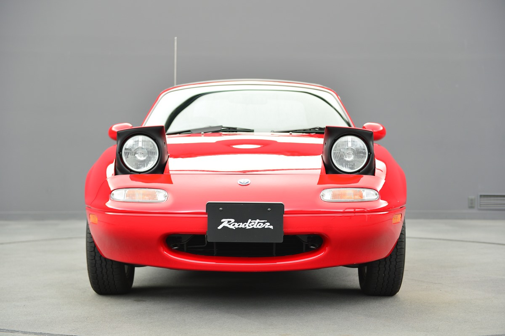
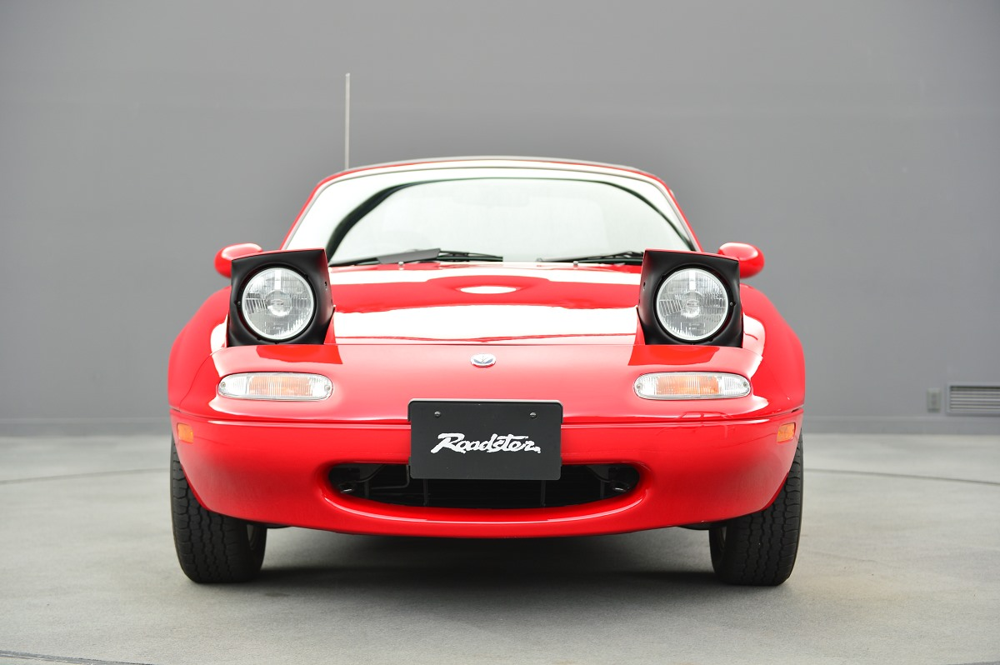

By turbo819
https://docs.google.com/forms/d/e/1FAIpQLSe3fJgpeQdJgd2kwPSbM-bw5_fJotBjrhfXNHds7QK-x1XHuA/viewform?usp=sf_link
車を所有することで4種の税がかかる ・自動車税 / 軽自動車税 その年の4月1日時点で当該車を所有している者が、年1度車の排気量に応じて、原則5月末日までに支払う税金。自家用車でだいたい年間3〜5万円という方が多い。 ・自動車重量税(車検時/重さに応じて) 2年に一度(初回は3年目)の車検時にも「自動車重量税」を支払っている。 車体が重くなるほど税金が高額になります。 ・環境性能割 車の購入時にかかる税金。廃止された「自動車取得税」の代わりに2019年1月より導入されました。車の持つ環境性能(燃費基準)に応じて税率が変わり、電気自動車等は非課税ですが燃費基準60%未満の車だと購入額の3%の税金がかかる。 ・消費税 購入時、車両価格の10%の消費税がかかっている。 ガソリンにかかる税も見逃せない! 車を動かすのに欠かせないガソリンにも、実は複数の税金がかかっている。 ガソリン税(揮発油税及び地方揮発油税)はその中でも最も高額で、本則税率と暫定税率から構成されています。税額は1リットル当たり(以下同)本則税が28.7円、暫定税が25.1円です。 また、石油税(地球温暖化対策税0.25円を含む)が別途2.8円かかるほか、消費税も10%かかっています。 1989年に消費税が導入されると同時に物品税(嗜好品やいわゆる贅沢品にかかる間接税)は廃止されました。しかし石油諸税は廃止も税率軽減もなく現在も残っています。このためガソリンは「二重課税」品ではないかとしばしば批判されています。日本の自動車税は他の国より高い? 日本の車にかかる税金は諸外国より安いのでしょうか。 自動車大国であるアメリカは、生活に車が欠かせない地域が多く、自動車税は年間10,000〜15,000円とかなり安いです。 また、欧州も概して日本より税金は安めに設定されていますが、ガソリンの値段は日本より高い国が多いようです。 ちなみにドイツや英国などには、長年乗り続けている車を「ヒストリック登録」することで自動車税が軽減または免除される制度があります。1台の車を大切に乗っていることへのいわばご褒美といえます。対して日本は登録13年以上で自動車税や自動車重量税が加算されていきます。エコカーは加算対象となりませんが、環境割以前から続く仕組みであるため、国民に消費を促す意味もあると考えられます。
 
